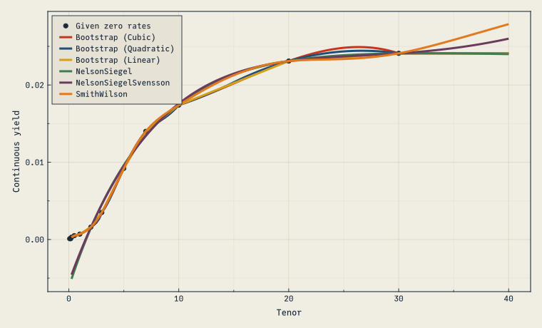
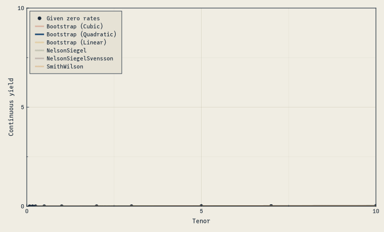

using FinanceModels
using CairoMakie
include(joinpath(@__DIR__, "..", "..", "assets", "themes", "cassette_futurism.jl"))
set_theme!(cassette_futurism_theme())Given rates and maturities, we can fit the yield curves with different techniques.
Below, we specify that the rates should be interpreted as Continuously compounded zero rates:
rates = Continuous.([0.01, 0.01, 0.03, 0.05, 0.07, 0.16, 0.35, 0.92, 1.40, 1.74, 2.31, 2.41] ./ 100)
mats = [1 / 12, 2 / 12, 3 / 12, 6 / 12, 1, 2, 3, 5, 7, 10, 20, 30]12-element Vector{Float64}:
0.08333333333333333
0.16666666666666666
0.25
0.5
1.0
2.0
3.0
5.0
7.0
10.0
20.0
30.0The above rates and associated maturities represent prices of zero coupon bonds, which we use as the financial instrument that we will fit the curve to:
quotes = ZCBYield.(rates, mats)12-element Vector{Quote{Float64, Cashflow{Float64, Float64}}}:
Quote{Float64, Cashflow{Float64, Float64}}(0.9999916667013888, Cashflow{Float64, Float64}(1.0, 0.08333333333333333))
Quote{Float64, Cashflow{Float64, Float64}}(0.9999833334722215, Cashflow{Float64, Float64}(1.0, 0.16666666666666666))
Quote{Float64, Cashflow{Float64, Float64}}(0.9999250028124297, Cashflow{Float64, Float64}(1.0, 0.25))
Quote{Float64, Cashflow{Float64, Float64}}(0.999750031247396, Cashflow{Float64, Float64}(1.0, 0.5))
Quote{Float64, Cashflow{Float64, Float64}}(0.9993002449428433, Cashflow{Float64, Float64}(1.0, 1.0))
Quote{Float64, Cashflow{Float64, Float64}}(0.9968051145430329, Cashflow{Float64, Float64}(1.0, 2.0))
Quote{Float64, Cashflow{Float64, Float64}}(0.9895549325678993, Cashflow{Float64, Float64}(1.0, 3.0))
Quote{Float64, Cashflow{Float64, Float64}}(0.9550419621907147, Cashflow{Float64, Float64}(1.0, 5.0))
Quote{Float64, Cashflow{Float64, Float64}}(0.9066489037539209, Cashflow{Float64, Float64}(1.0, 7.0))
Quote{Float64, Cashflow{Float64, Float64}}(0.8402968976584314, Cashflow{Float64, Float64}(1.0, 10.0))
Quote{Float64, Cashflow{Float64, Float64}}(0.6300223399419124, Cashflow{Float64, Float64}(1.0, 20.0))
Quote{Float64, Cashflow{Float64, Float64}}(0.4852941873885002, Cashflow{Float64, Float64}(1.0, 30.0))Fitting is then calling fit along with the desired curve construction technique. Here are several variants:
ns = fit(Yield.NelsonSiegel(), quotes);
nss = fit(Yield.NelsonSiegelSvensson(), quotes);
sw = fit(Yield.SmithWilson(ufr=0.05, α=0.1), quotes);
bl = fit(Spline.Linear(), quotes, Fit.Bootstrap());
bq = fit(Spline.Quadratic(), quotes, Fit.Bootstrap());
bc = fit(Spline.Cubic(), quotes, Fit.Bootstrap());That’s it! We’ve fit the rates using six different techniques. These can now be used in a variety of ways, such as calculating the present_value, duration, or convexity of different cashflows if you imported ActuaryUtilities.jl”
Visualizing the results
const CURVES = [
(bc, "Bootstrap (Cubic)"),
(bq, "Bootstrap (Quadratic)"),
(bl, "Bootstrap (Linear)"),
(ns, "NelsonSiegel"),
(nss, "NelsonSiegelSvensson"),
(sw, "SmithWilson"),
]
function curveplot!(ax, curve, color; label="", alpha=1.0)
maturities = 0.25:0.25:40
f(x) = rate(zero(curve, x))
lines!(ax, maturities, f.(maturities);
label, linewidth=3, color=(color, alpha))
end
function build_axis!(ax, alpha=ones(length(CURVES)))
scatter!(ax, mats, rate.(Continuous().(rates));
label="Given zero rates", color=CF_INK, markersize=9)
for (i, (c, name)) in enumerate(CURVES)
curveplot!(ax, c, CASSETTE_PALETTE[i]; label=name, alpha=alpha[i])
end
return ax
end
let
fig = Figure(size=(760, 460))
ax = Axis(fig[1,1]; xlabel="Tenor", ylabel="Continuous yield")
build_axis!(ax)
axislegend(ax, position=:lt)
fig
end
And an animated version that fades each fit in turn:
let
fig = Figure(size=(760, 460))
ax = Axis(fig[1,1]; xlabel="Tenor", ylabel="Continuous yield")
a = [1.0, 0.25, 0.25, 0.25, 0.25, 0.25]
record(fig, "anim_fps2.gif", 1:6; framerate=2) do _
a .= circshift(a, 1)
empty!(ax)
build_axis!(ax, a)
axislegend(ax, position=:lt)
end
end